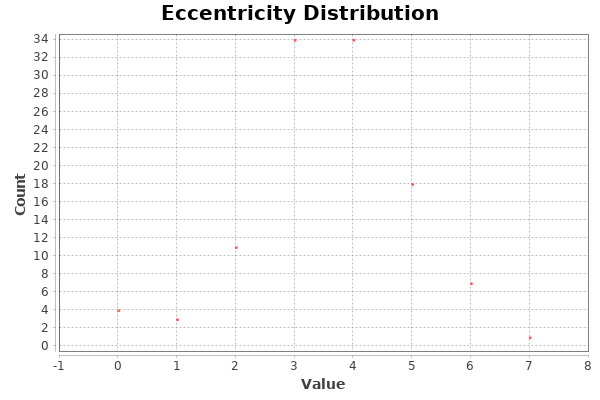

Graph Distance Report
Parameters:
Network Interpretation: directed
Results:
Diameter: 7
Radius: 0
Average Path length: 2.5985937022317334

Algorithm:
Ulrik Brandes, A Faster Algorithm for Betweenness Centrality, in Journal of Mathematical
Sociology 25(2):163-177, (2001)